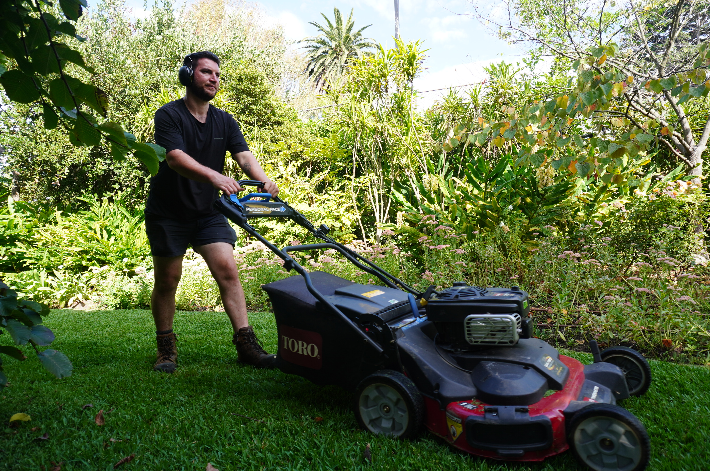

Lawn programs
Mowing, fertiliser, nutrition, pest treatment and renovation matched to the lawn.
Reliable mowing and horticultural maintenance that keeps the whole garden working together.
A good lawn program responds to the grass, soil and season. Good Natured Gardens provides Hawthorn lawn care ranging from regular cuts and bi-annual fertiliser treatments to pest treatment, nutrition and lawn renovation plans.
We can care for the planted garden at the same time, keeping shrubs, hedges and topiary in proportion with the lawn and the surrounding space.
Our Melbourne portfolio includes mowing a client's Buffalo lawn in Hawthorn. Clean cutting, suitable frequency and a plan for nutrition help dense Buffalo grass stay presentable through active growth.

Mowing, fertiliser, nutrition, pest treatment and renovation matched to the lawn.
Plant-specific pruning that supports flowering, shape and healthy new growth.
Regular trimming for neat boundaries and well-proportioned formal planting.
Yes. We provide lawn mowing and tailored care in Hawthorn, from regular cutting and fertiliser treatments to renovation plans.
Yes. We have maintained Buffalo lawn for a Hawthorn client and can recommend care based on your lawn's condition.
Yes. We also provide specialist plant pruning, hedge trimming and topiary, so lawn and planted areas can be maintained together.
Tell us about your lawn, planted areas and how often you need help.
Ask for a quote